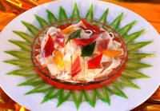
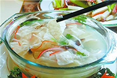
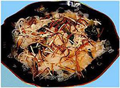
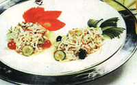
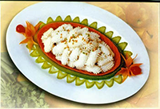
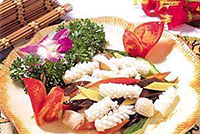

| 温州菜以海鲜为主，菜品口味新鲜，淡而不薄，烹调技术讲究轻油，轻芡，注重刀工。三丝敲鱼、锦绣鱼丝和爆墨鱼花并称“瓯菜三绝”。 | |
| 三丝敲鱼：温州民间传统佳肴，相传已有百余年历史。直到今日，每到逢年过节、亲朋相距，常以敲鱼款待客人，“三丝”指的是鸡脯丝、火腿丝、香菇丝、敲鱼、三丝加清汤烹制而成的“三丝敲鱼”，汤清味醇、鲜嫩爽滑，色泽调和，独具风味。 三丝敲鱼的由来：说起敲鱼，有一段传说。温州某古刹有一位老方丈，孤身一人赴福建取经，不幸途中遇难，葬身鱼腹。小和尚获知噩耗后，悲痛万分，便带念经用的木鱼，到师傅遇难的地方超度。过了49天，发现海面上浮起了许多鳞光闪闪的黄鱼。小和尚猛然想起师傅走时穿的那件黄色袈裟，心想这些鱼肯定是吃了师傅的肉体才显出黄色，于是怒火中烧，立即把这些黄鱼捞起来，剥去皮，净内脏，抽了骨，把鱼剁成肉糜，放在木鱼上狠狠地敲起来，把鱼肉敲成一片片薄饼状的鱼片。再把这些鱼片放在船上晒干，带回留念。由于数量过多，多余的就留在船上。船翁吃饭时，拣了些鱼片切丝熬汤，没想到味道异常鲜美。消息不胫而走，“敲鱼”的好名声迅速传开了，人们争相捕捞食用。久而久之，“敲鱼”这道制法奇特的菜肴也就流传至今。 |  |
| 锦绣鱼丝： 新创瓯菜，选用黑鱼脊背肉切成细丝，配红绿柿椒丝、黄蛋皮丝、棕色香菇丝等炒制而成。此菜色彩丰富似锦绣，鱼丝条不断、匀称，其味十分鲜美。 口味特点：色彩艳丽，五彩缤纷，鲜香滑嫩。 |  |
| 爆墨鱼花：在瓯菜中有一系列的墨鱼菜肴，爆墨鱼花是其中的代表作。这是一道刀工、炉工并重的瓯菜名肴，脆嫩爽口，造型非常美观。 食谱营养：墨鱼富含蛋白质、维生素A、钙、镁、硒等营养元素，具有滋养肝肾、补阴血、调经、止带之功效，用于治疗妇女经血不调、水肿、湿痹、痔疮、脚气等症；蚕豆中含有丰富的钙、锌、锰、磷脂等，是大脑和神经组织的重要组成成分，并含有丰富的胆碱，有增加记忆力和健脑作用。对于正在应付考试或脑力工作者，适当进食蚕豆可能会有一定功效。蚕豆中的蛋白质可以延缓动脉硬化，蚕豆皮中的粗纤维有降低胆固椁、促进肠蠕动的作用。同时蚕豆也是抗癌食品之一，对预防肠癌有一定的作用。 |  |
其它特产【炒粉干】在温州地区，炒粉干算是最常见的小吃了，无论街头小吃、排挡、餐馆或是酒店都可以看到炒粉干的身影。分四等四级，以平阳粉干为一等一级，以腾蛟粉干为二等二级，马路排挡的是三等三级，而在正规店里吃到的则味道大不如马路摊贩排挡的，因此是四等四级。粉干在没下锅以前，看上去和粉丝是没什么区别的。但是粉干颜色比较深，炒过后有面的口感，却又是粉丝的味道。就这样的吃法在温州地区是家家吃、户户喜欢的。 【灯盏糕】温州小吃首推灯盏糕。 市区解放街（解放北路）和鼓楼街的交叉口，就是大名鼎鼎的扁头灯盏糕了。据说，清光绪年间温州有姓陈的兄弟二人，在市区东门陡门头路亭制卖一种形似灯盏的点心，形似灯盏，独具风味，一时名声大振，便被称为“灯盏糕”。味道自然不同凡响，外皮酥松脆甜，肉馅则煞是爽口。 【猪油糕】市区解放街（解放北路）和鼓楼街的交叉口的扁头灯盏糕小吃店也卖猪油糕的，味道不凡。猪油糕这其实是把一个糯米团，摊成薄薄的，放在猪油里煎到外皮稍脆时就可以吃了，吃时撒上些白糖，然后用粽子叶包着，猪油糕简单而古朴，为一代代的温州人所喜爱。 【双炊糕】市区五马街“五味和”百年老店有卖，都是带包装的。双炊糕是瑞安的特产。李大同牌子最有名气。现在牌子传到李大同第三代传人（老五房）李观成先生手中。“双炊糕的特点是：细、软、韧、香、甜其中一道工序，需要将糯米与铁砂一起炒制，这样做成的双炊糕才更香，之所以叫“白糖双炊糕”，是因为需要用糯米粉加白糖，经过两番炊制而成。 【长人馄饨】1930年前后，乐清人陈立标在市区铁井栏口经营馄饨，注重质量，馄饨皮薄，用碱得当，馅心新鲜，盖料讲究，有紫菜、蛋丝、肉松、酒浸虾米等。所煮馄饨，汤清见底，形似花朵，美味爽口。因他个子很高，人称长人馄饨。 【矮人松糕】矮人松糕为温州有名的特产，因创制人谷进芳矮小而得名。此糕选用纯糯米，过水磨成细粉，拌以腌渍了几天的猪臀肥肉丁，并配以上等桂花和白糖拌匀，炊熟成板，切成方块出售。松糕既松又软，甜中有咸，清香可口，不粘牙，很是爽口。 【永嘉楠溪江麦饼】去楠溪江游玩，必定吃楠溪江麦饼，不吃绝对可惜。温州市区麦饼多。但都不正宗。楠溪江麦饼分为三派，三足鼎立，瓯北镇派、上塘镇派、沙头镇派。去楠溪江游玩，都可以经过这些镇，可也顺路买过来。其实这种食品比较多见，把面粉和好，里面放入梅菜，肥猪肉，包好，擀成薄薄的，放进炉中烤就可以了。和面、做陷、包的时候皮的厚薄和烤的时间和火候都是十分讲究的，正是这一步步的精工细作才会有松脆弱、喷香的美味麦饼。 【鱼丸】路边的各色小店里面都有，有模有样的，有强能鱼丸等连锁店。说是鱼丸，实际是并不是一个丸子，而是珊瑚一般的，或者说像树杈更合适。1998年12月，五马街和解放路交叉口的温州酒家的鱼丸以其风味佳，有特色，同县前汤圆店麻心汤圆一起被认定为“中华名闲食”。 【牛杂】是苍南县江南片区主要龙港一带深受欢迎的小吃，历史比较悠久，但无从考证，它主要挑选牛屁股最有韧性肉切成丁放入锅中加入十几味香料包慢慢煮一天以上，以酱色为主，越煮越有嚼劲久煮不烂，一定要乘热加醋、辣椒粉，配上葱，是温州地区为数不多以酸辣为主的小吃。 【清明饼】温州民间，特别是广大农村至今仍保留农历一年到头都讲“吃”的习惯。如二月二，吃芥菜饭；三月，吃清明饼儿；清明节前，乡村户户磨糯米粉、采清明草做饼。清明草俗称绵莱，清明季节，会萌生出绵绵白毛细叶。人们采摘叶顶，洗净捣烂和之糯米粉，馅以猪肉丁、笋丝、蒸熟而食．吃芥菜饭和清明饼都有清热解毒之效。 | |